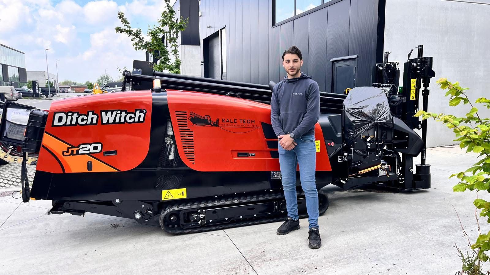
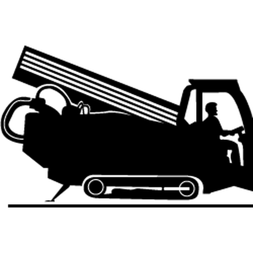
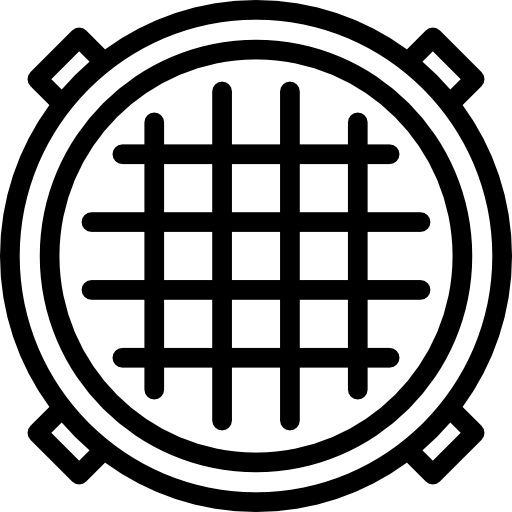
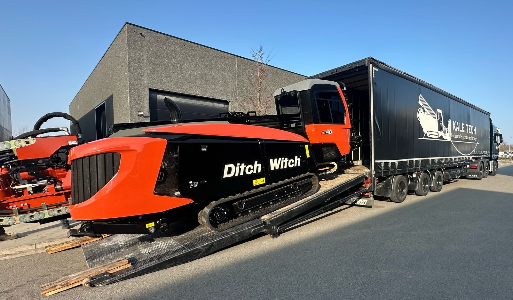

Kale-Tech is een familiebedrijf dat zich toelegt op horizontaal gestuurde boringen en graafwerken.
We nemen het volledige traject voor onze rekening: van technische tekeningen en vergunningsaanvragen tot de uitvoering en oplevering, altijd met persoonlijk en rechtstreeks contact.
Met een gestuurde boring leggen we leidingen en kabels onder wegen, gebouwen en waterlopen door, zonder sleuven te graven. Zo blijft de omgeving intact en blijft de hinder beperkt, ook op moeilijk bereikbare plaatsen.

We leggen leidingen en kabels onder wegen, gebouwen en waterlopen door, zonder iets open te breken. Voor water, gas, riolering, elektriciteit en telecom.

Waar graven nodig is, graven we machinaal of met de hand. Met duidelijke signalisatie op de werf en een terrein dat we netjes herstellen.
Een goede boring begint bij de juiste machine.
Met onze recentste aanwinst, de Ditch Witch JT20, werken we vlot op plaatsen met weinig ruimte. Voor langere en zwaardere boringen zetten we de Vermeer D36x50 en de Ditch Witch AT40 in.
Zo kiezen we voor elk project het toestel dat past en boren we nauwkeurig onder wegen, waterlopen en bestaande leidingen door. Efficiënt voor jou, en met zo weinig mogelijk impact op de omgeving.

Drie redenen waarom klanten op ons rekenen, project na project.
Als familiebedrijf houden we de lijnen kort. Je spreekt rechtstreeks met ons, van de eerste afspraak tot de oplevering.
Als familiebedrijf houden we de lijnen kort. Je spreekt rechtstreeks met ons, van de eerste afspraak tot de oplevering.
Kale-Tech is ontstaan uit een passie voor techniek en innovatie. We doen wat we het best kunnen: gestuurde boringen en graafwerken.
Kale-Tech is ontstaan uit een passie voor techniek en innovatie. We doen wat we het best kunnen: gestuurde boringen en graafwerken.
We zijn VCA**-gecertificeerd en werken op elke werf volgens strenge normen voor veiligheid, gezondheid en milieu.
We zijn VCA**-gecertificeerd en werken op elke werf volgens strenge normen voor veiligheid, gezondheid en milieu.
Vraag vrijblijvend een offerte aan. We bekijken graag samen met jou wat je project nodig heeft.